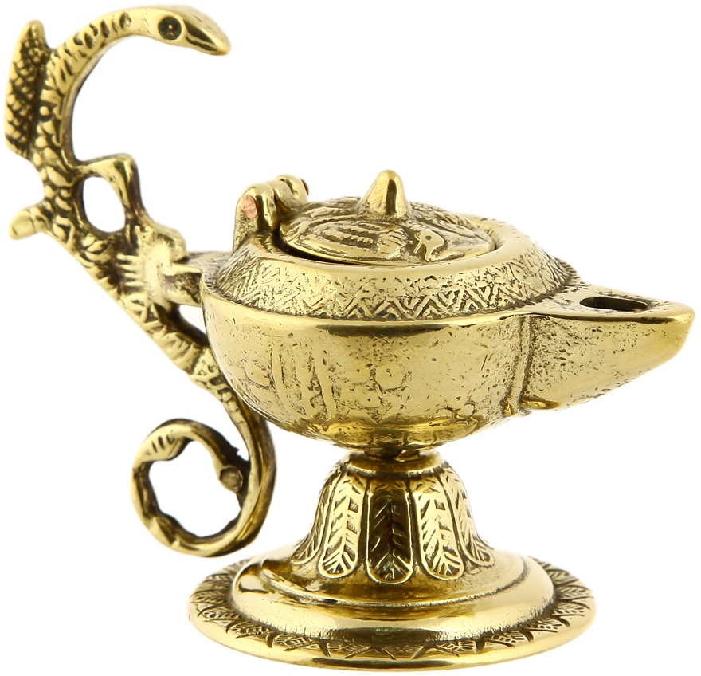

Лампа Алладина
Описание товара
Та самая лампа, которая была найдена в пещерах самим Алладином. Проведена предпродажная подготовка, снаружи от масла полностью очищена, но своих свойств по вызову джинна не поменяла.
Стоимость
снусмумриков 396 или обмен на Москва-сити
Характеристики
| № п\п | Интересно знать | подробности | еще более подробные подробности | примечание |
| 1 | Третий собственник | хороший такой человек. был | скрыто (в соотв. с 152-ФЗ от 27.07.2006г.) | даже нечего сказать |
| 2 | Срок годности | при правильном хранении не ограничен | В случае неправильного хранения, возможны непредсказуемые кражи | хранить под семью замками |
| 3 | золото | проба 585 | 1 кг 585 пробы золота включает 585 г чистого драгметалла | прям стопудово золото |
| 4 | масло масляное | 5W-40 | при использовании других масел, джинн может отказаться выскакивать | экономить на масле нельзя |
| способствует улучшению работы сердца и кровеносных сосудов, функционированию нервной и эндокринной систем, а также эффективному очищению организма от токсинов и шлаков, препятствует ожирению | ||||
Подробное описание товара
Продается с незначительным деффектом — джинн вызывается, но вместо желаний рассказывает анекдоты, устраивает конкурсы среди окружающих, много болтает.
Лампу можно использовать как по назначению — хранить в лампе масло, можно использовать Джинна на семейных застольях ,когда заставляют говорить тосты или на свадьбах в качестве тамады.
Лампа понравится любителям старины, так что будет замечательным подарком на день рождения антиквара.
Дополнительно:
Не сошлись с Джинном во взглядах на юмор? возможен возврат товара!
Принцесса Жасмин в нагрузку
Примечание
Принцесса Жасмин возврату не подлежит